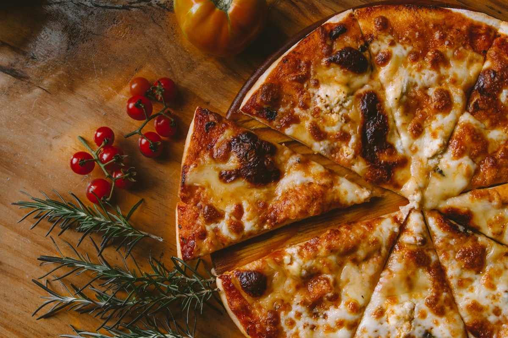
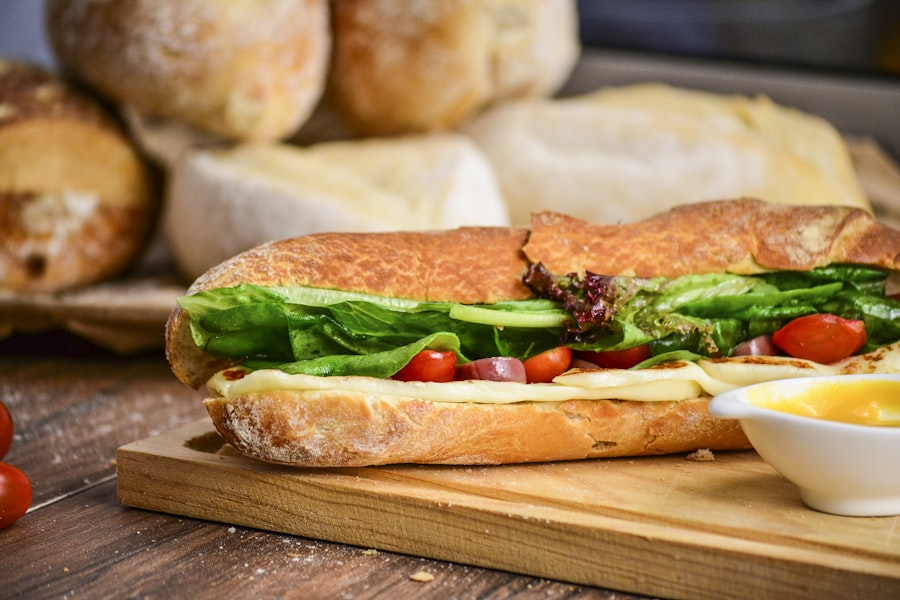

The Buffalo Style Heritage
Exploring the unique identity of Western New York pizza, authentic crispy wings, and the historical Beef on Weck sandwich.
Where NYC Meets Detroit: The Buffalo Golden Mean
For decades, pizza purists debated thin New York slices versus thick Detroit or Chicago pies. But in Buffalo, NY, a distinct hybrid style developed in steel pan deck ovens.
Buffalo pizza features a focaccia-like rise with a crisp bottom shell, a sweeter cooked tomato sauce, generous whole-milk mozzarella cheese that browns into savory blisters, and the undisputed king of toppings: cup-and-char pepperoni.

1. The Cup & Char Secret
Unlike flat, mechanically processed pepperoni, Buffalo pizzaiolos insist on natural collagen casings. As heat transfers in 550-degree deck ovens, the edges contract faster than the center, curling each slice into a deep crispy cup holding seasoned paprika oil.
2. True Buffalo Wings
Buffalo wings must never be breaded or battered. They are deep fried raw in fresh oil until the skin is blistered and shatteringly crisp, then emulsified in real melted butter and Frank's RedHot Cayenne sauce. Blue cheese is mandatory; ranch is strictly optional.
3. The Kummelweck Tradition
Created in the 1800s by German immigrant baker William Wahr in Buffalo, the kimmelweck roll features a crunchy top encrusted with coarse kosher pretzel salt and aromatic caraway seeds. Filled with hot au-jus-dipped roast beef and freshly grated horseradish.

Bringing Western NY Authenticity to the Queen City
When Buffalo transplants moved to Charlotte, they found plenty of pizza shops, but none capturing the genuine depth, sweetness, and cup-and-char texture of back home.
Bisonte Pizza Co. was founded to bridge that gap. We import authentic bakery rolls, select authentic cheeses, and maintain exact baking times so every bite transports you directly to Western New York.
Read Our Founder Story